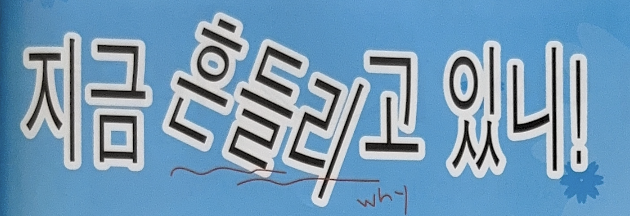

Sandoll고딕
산돌 고딕은 기본 중의 기본 폰트로
본문에 가장 적합하게 디자인된
산돌의 스테디셀러이다.
산돌 명조와 마찬가지로 한글과 영문과 숫자
모두가 시각적으로 조화롭게 보이고
추가적인 수정이 필요없게끔
수많은 고민과 검토를 거쳐 제작하였다.
출시년도:1995
스펙:한글 2,350자 / 라틴 95자
한국 한자 4,888자 / 부호 2,268자
세로쓰기 197자